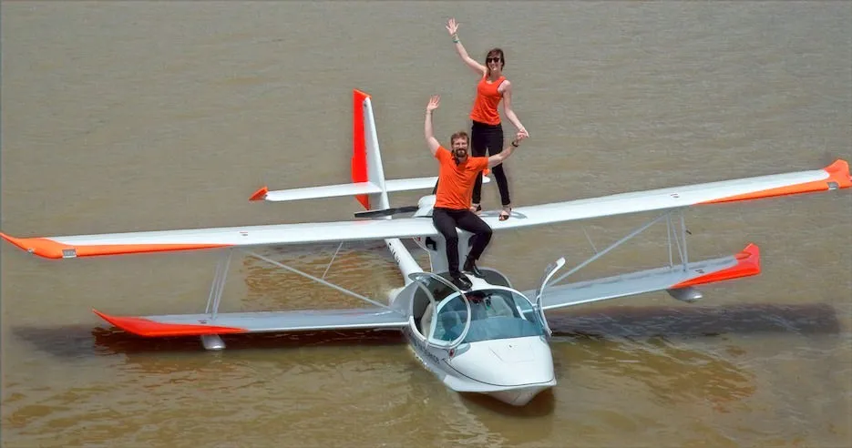
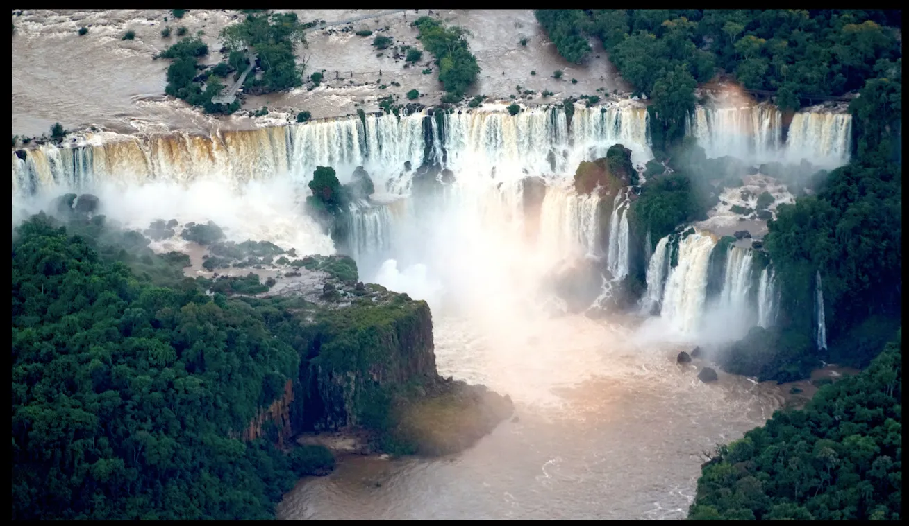
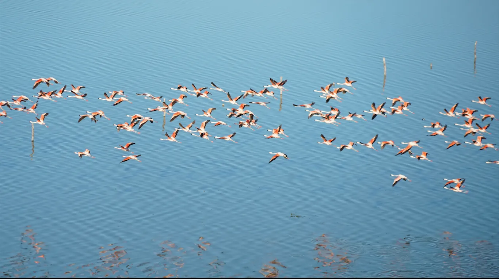
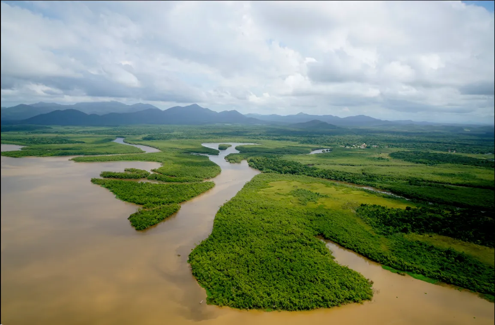

"Hola chicos" comme ils disent ici ! Figurez-vous qu'entre deux nouvelles rédigées de notre part, vous pouvez suivre notre position en direct depuis notre site internet. Et aujourd'hui, nous vous écrivons depuis Calafate, en Argentine, à l'entrée des glaciers.

Un petit retour en arrière et en image s'impose, depuis notre départ d'Europe en février dernier. Au Brésil, chez Edra près de Sao Paulo nous avons pris possession de notre nouvelle maison volante et flottante. Après un concours parmi les internautes, le design final de l'hydravion fut choisi à partir des propositions d'une classe d'élèves de primaire qui nous suit : vous avez choisi la baleine !
Après notre départ d'Edra nous sommes descendus vers le Sud de la côte brésilienne à Florianopolis, puis sommes entrés en terres argentines au niveau des chutes d'Iguazu, au soleil couchant. De là la route nous a portés vers El Dorado, Posadas puis Mercedes, à la rencontre des "gauchos", ces fermiers à cheval qui parcourent leurs "estancias", leurs fermes sur des kms de steppes fertiles afin de surveiller leur bétail bovin paissant paisiblement, entouré des sortes de petites autruches sauvages "nandous", des placides mammifères "capybaras", des buffles sauvages et de nuées d'oiseaux superbes.

Nous avons ensuite rejoint la grande ville de Rosario au bord du fleuve Parana en pleine crue, puis celle de Carhué qui a recueilli les habitants de la ville voisine qui ont tous été évacués, après que cette dernière ait été entièrement engloutie par le lac salé Epecuen. Les responsables du parc naturel nous ont mandatés pour effectuer une comptabilité aérienne des flamants roses qui peuplent ce fameux lac, en se nourrissant des "artemia salinas", des crustacés capables de survivre dans cet environnement salin. A l'occasion de ce survol, nous avons pu admirer non seulement l'envol des flamants roses, mais aussi cette ville récemment ressortie des eaux, dont les arbres et les maisons calcinés par le sel offrent un spectacle fascinant.

Nous nous sommes ensuite posés dans les aéroports de St Exupéry, Trelew, Comodoro Rivadavia, Gallegos, Ushuaia, et enfin de la ville la plus au sud du continent sud-américain, Puerto Williams, où nous avons rencontré la dernière locutrice du Yamana, la langue indigène du peuple du même nom. De là nous sommes remontés le long de la côte vers la venteuse Rio Grande, puis sommes entrés dans les terres vers la ville de Calafate. Les vents à affronter pour tout ce périple ont été particulièrement éprouvants, et nous sommes heureux d'avoir toujours pu compter sur les pilotes locaux des aéroclubs, qui possèdent une expertise hors pairs pour affronter les conditions locales, et une grande hospitalité : à chaque étape, un "asado" - un barbecue - nous attendait !

A partir de maintenant, les missions scientifiques vont s'accélérer à grands pas ! Au programme des trois prochains mois les projets seront liés aux glaciers, aux montagnes enneigées inaccessibles, aux lacs en danger de pollution, aux fossiles de dinosaures, et à la création de parcs naturels... La suite au prochain post !